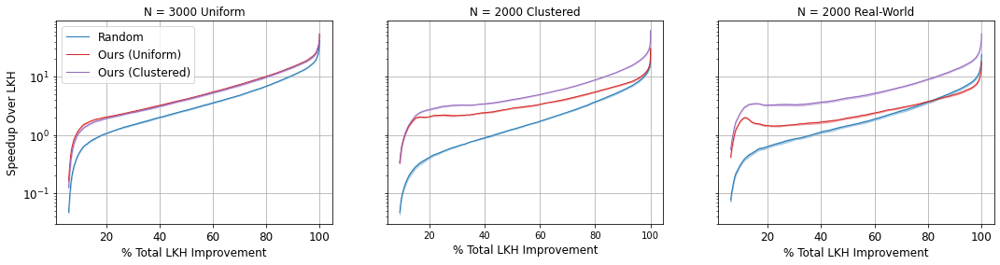

Learning to Delegate for Large-scale Vehicle Routing
Sirui Li*, Zhongxia Yan*, Cathy Wu
MIT
Neurips 2021 (Spotlight)
ArXiv | OpenReview | Github | Poster
{kind=link}

Vehicle routing problems (VRPs) form a class of combinatorial problems with wide practical applications. While previous heuristic or learning-based works achieve decent solutions on small problem instances of up to 100 cities, their performance deteriorates in large problems. This article presents a novel learning-augmented local search framework to solve large-scale VRP. The method iteratively improves the solution by identifying appropriate subproblems and delegating their improvement to a black box subsolver. At each step, we leverage spatial locality to consider only a linear number of subproblems, rather than exponential. We frame subproblem selection as regression and train a Transformer on a generated training set of problem instances. Our method accelerates state-of-the-art VRP solvers by 10x to 100x while achieving competitive solution qualities for VRPs with sizes ranging from 500 to 3000. Learned subproblem selection offers a 1.5x to 2x speedup over heuristic or random selection. Our results generalize to a variety of VRP distributions, variants, and solvers.
@inproceedings{li2021learning,
title={Learning to delegate for large-scale vehicle routing},
author={Sirui Li and Zhongxia Yan and Cathy Wu},
booktitle={Thirty-Fifth Conference on Neural Information Processing Systems},
year={2021},
}
Model Architecture
We train a Transformer attention-based neural network to predict the solution quality of subsolvers. We use the prediction to decide which subproblem to solve with the subsolver next.
Experimental Results
We demonstrate typical plots for total cost vs time (top left), improvement vs time (bottom left), and speedup (right) of our method compared with non-learning baseline subproblem selection methods (Random, Min Count, Max Min Dist). The speedup of our learned method is the main focus of our paper. This particular set of plots demonstrates performance on uniform CVRP problem instances with N=1000 cities.
Considered Variations
We demonstrate the robustness of our method across many experimental variations of problem properties and solution properties.
| Configuration | Considered Variations | Summary Figure |
|---|---|---|
| Problem Properties | ||
| # Cities (N) | 500; 1000; 2000; 3000 | |
| City Distribution | Uniform; Clustered; Real World |  |
| Additional Constraints | None (CVRP); Time Windows (CVRPTW); Pickup+Delivery (VRPMPD) | |
| Solution Properties | ||
| Initial Solution | Partitioned LKH; Randomized | |
| Subproblem Size (k) | k=10; k=5 routes per subproblem | |
| Subsolver | LKH-3; HGS | |
Acknowledgement
This research was supported by MIT Indonesia Seed Fund, US DOT DDETFP, and the MIT-IBM Watson AI Lab. The authors are grateful to the anonymous reviewers for detailed comments that substantially improved the article. The authors acknowledge the MIT SuperCloud and Lincoln Laboratory Supercomputing Center for providing (HPC, database, consultation) resources that have contributed to the research results reported within this paper. We also thank Zongyi Li for helpful discussions and technical advice throughout the project.